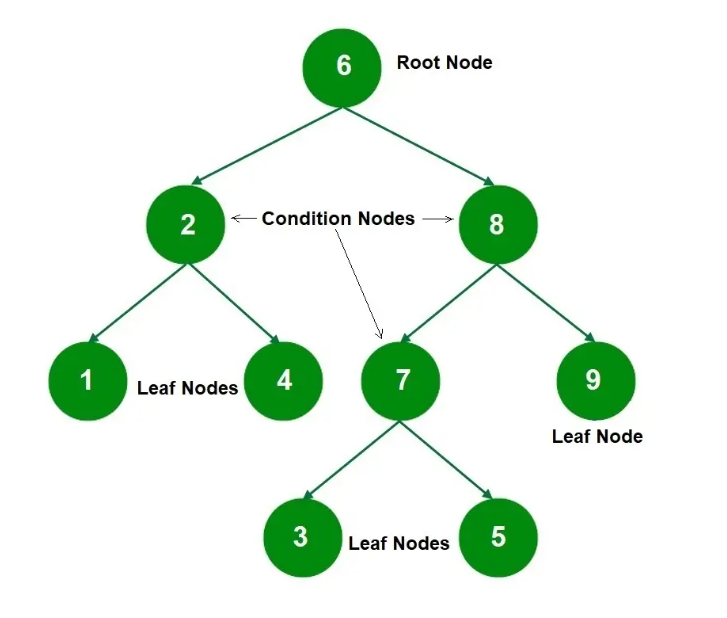
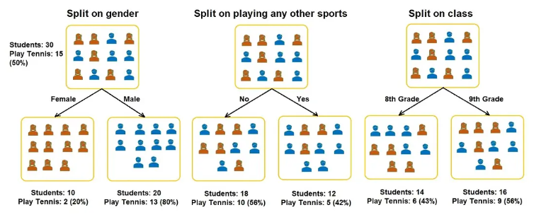
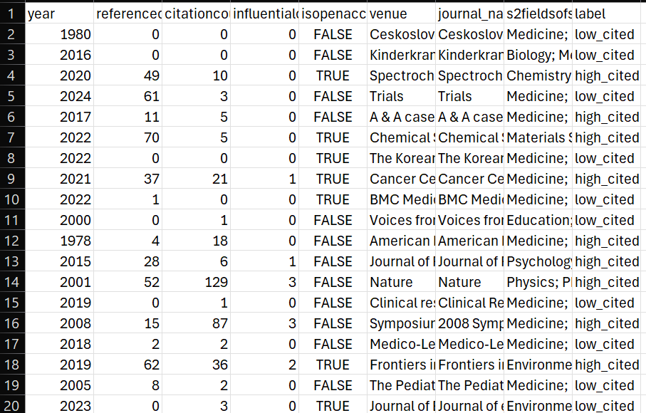
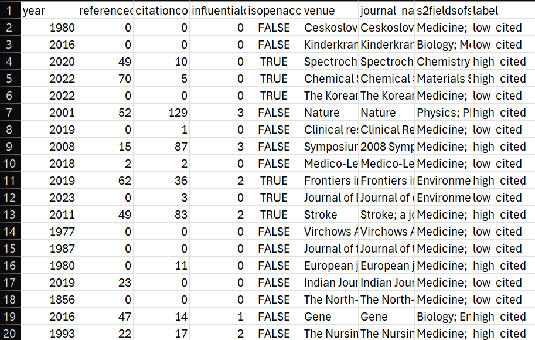
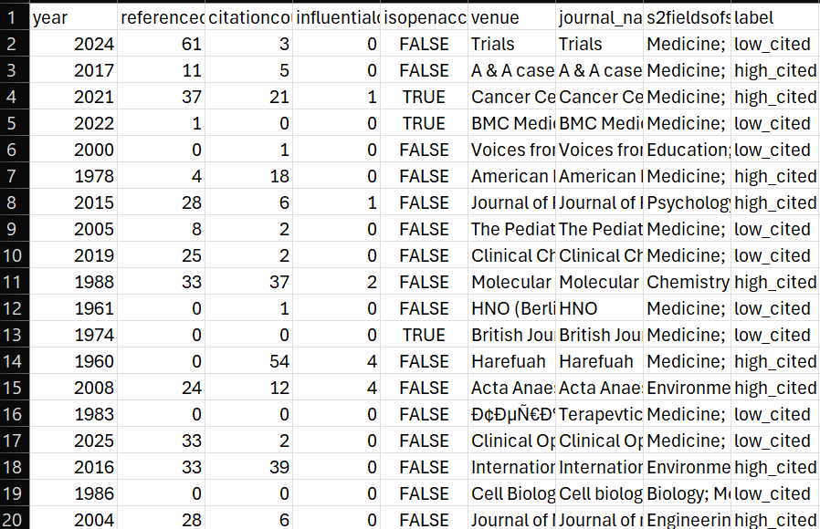
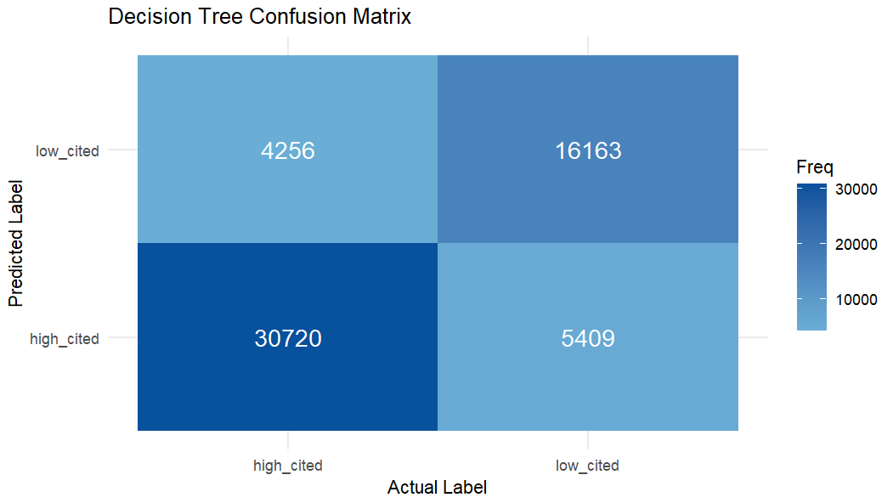
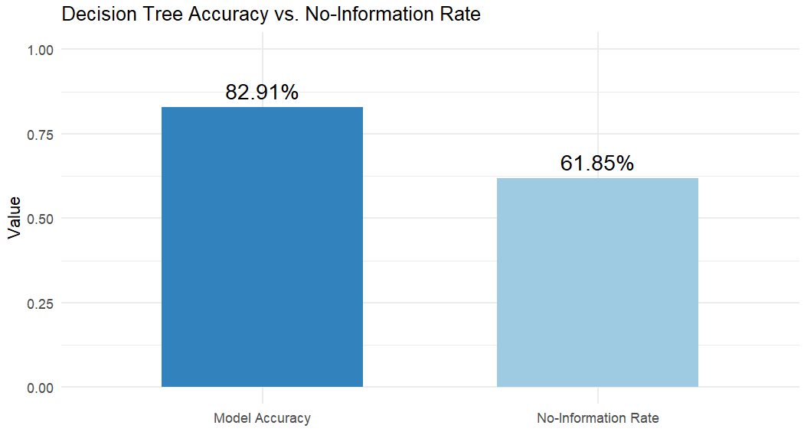
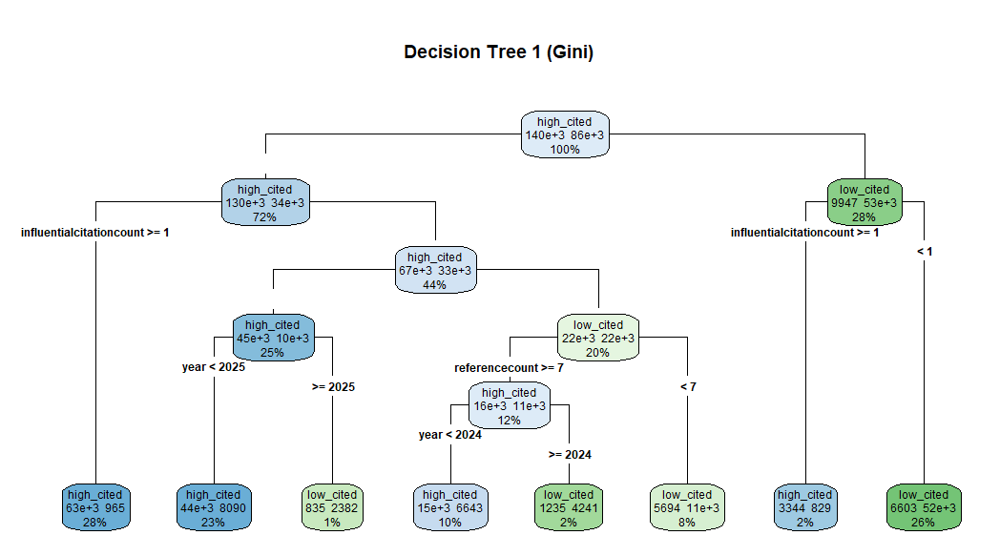
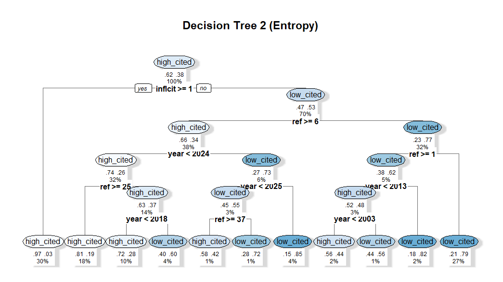
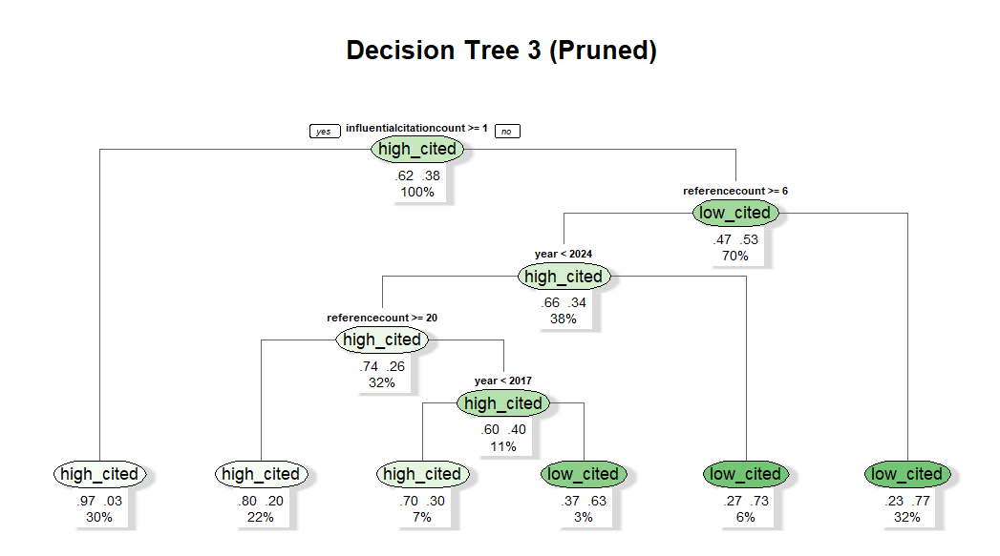

Decision Trees (DTs) are supervised learning models that operate by recursively partitioning the feature space into increasingly homogeneous subsets. At each stage of the tree-building process, the algorithm evaluates all possible splits across all available features and selects the split that maximally improves the purity of the resulting partitions. This recursive partitioning continues until a stopping criterion is met, such as reaching a minimum node size (leaf node), achieving complete purity, or hitting a predefined maximum depth, as shown in Fig. 1. The final structure resembles a hierarchical, tree-like model in which internal nodes represent decision rules, branches represent outcomes of those rules, and terminal nodes (leaves) represent predicted class labels or numerical values. An example of this can be seen in Fig. 2, where the dataset is partitioned along different candidate attributes, e.g., gender, participation in other sports, or academic grade level, and each potential split produces child nodes with distinct class distributions. These alternative partitions illustrate how the algorithm evaluates every feasible feature-based division, quantifies the resulting change in class purity, and ultimately selects the split that yields the greatest reduction in impurity. In this example, each candidate split produces subgroups with different proportions of students who play tennis, demonstrating how Decision Trees systematically compare these competing partitions to determine the most informative branching structure.


Decision Trees are widely used in both classification and regression tasks because they require no assumptions about linearity, normality, or feature interactions. They naturally capture nonlinear relationships and complex interactions between variables, and they produce models that are highly interpretable. A prediction can be explained simply by tracing the path from the root node to a leaf node, making Decision Trees especially valuable in domains where transparency and justification of decisions are essential, such as healthcare diagnostics, credit scoring, and policy analysis.
The central challenge in constructing a Decision Tree is determining which split at each node yields the greatest improvement in predictive structure. To quantify the quality of a split, Decision Trees rely on impurity measures, ie., mathematical functions that describe how mixed or uncertain the class distribution is within a node. Two of the most widely used impurity metrics are GINI impurity and Entropy. Both metrics reach their minimum value (0) when a node is perfectly pure (i.e., contains only one class), and both increase as the class distribution becomes more heterogeneous.
GINI impurity, used primarily in the CART (Classification and Regression Trees) algorithm, measures the expected probability of misclassification if a randomly selected observation from the node were labeled according to the node’s class proportions. It is defined as:
GINI = 1 − Σ pi2
where pi represents the proportion of class i within the node. GINI is computationally efficient and tends to favor splits that isolate the most frequent class.
Entropy originates from information theory and quantifies the level of uncertainty or disorder within a node. A node with a uniform class distribution has high entropy, while a node dominated by a single class has low entropy. Entropy is defined as:
Entropy = − Σ pi log2(pi)
Information Gain (IG) is the criterion used to evaluate the effectiveness of a split. It measures the reduction in impurity achieved by partitioning a node into child nodes. A split with high Information Gain produces child nodes that are significantly purer than the parent node. Formally:
Information Gain = Impurity(parent) − Weighted Impurity(children)
The weighted impurity accounts for the relative sizes of the child nodes, ensuring that large impure nodes are penalized more heavily than small ones.
Lets consider a node containing 10 observations: 6 labeled “Yes” and 4 labeled “No.” The entropy of this parent node would therefore be:
Entropy(parent) = −(6/10)log₂(6/10) − (4/10)log₂(4/10) ≈ 0.97
Suppose a candidate split produces two child nodes:
The weighted entropy of the children is:
(5/10)(0.72) + (5/10)(0.97) = 0.845
Thus, the Information Gain would be:
IG = 0.97 − 0.845 = 0.125
Interpretation: This value represents the reduction in uncertainty achieved by the split. In this, the algorithm compares this IG value with the IG values of all other possible splits and selects the split that maximizes impurity reduction.
It is theoretically possible to construct infinitely many Decision Trees from the same dataset because the structure of a tree is highly sensitive to the choices made during the splitting process, i.e., different algorithms employ different impurity measures, tie-breaking rules, and stopping criteria. So, even within a single algorithmic framework, the following factors contribute to the vast number of possible trees:
Because of these factors, even a modest dataset can yield an enormous "effectively infinite" space of valid tree structures. This flexibility is both a strength and a weakness: while it allows Decision Trees to model complex patterns, it also makes them prone to overfitting unless regularization techniques are applied.
Decision Trees are supervised learning methods, which means they require labeled data. Before training the model, the dataset must be split into two disjoint subsets:
Only labeled data can be used for supervised learning because the model must learn the relationship between features and known outcomes. The Training and Testing sets must be disjoint to ensure that the model is evaluated on data it has never seen before.
Below is a sample of the labeled dataset used for Decision Trees:

Dataset link: Download
The dataset was split into training and testing subsets using an 80/20 split (or your chosen ratio). This ensures the model has enough data to learn patterns while still being evaluated fairly.

Dataset link: Download

Dataset link: Download
The Decision Tree model was implemented using R.
Code link: Download
The R code builds a supervised decision tree model to classify biomedical papers as high- or low-cited. After loading the cleaned dataset, the script selects relevant predictors and creates a binary label based on whether each paper’s citation count is above the median. Categorical variables are converted to factors, and high-cardinality fields such as journal and venue are simplified using lumping to prevent overfitting. The data is then split into an 80/20 train–test set. Three decision trees are trained: a simple Gini-based tree, an entropy-based tree with pruning, and a pruned version of a deeper model with additional category reduction.
After training the Decision Tree model on the 80% Training Set, predictions were generated for the Testing Set.
Model performance was evaluated using a confusion matrix, overall accuracy, and class‑specific metrics such as sensitivity and specificity.
Removing citationcount from the predictor set prevented label leakage and resulted in a more realistic, generalizable model.

The confusion matrix shows that the model correctly classified a large majority of both high‑cited and low‑cited papers. However, misclassifications occurred in both directions, reflecting the complexity and overlap in bibliometric metadata.

Accuracy: 82.91%
Sensitivity (High‑Cited Detection): 87.83%
Specificity (Low‑Cited Detection): 74.93%
Positive Predictive Value: 85.03%
Negative Predictive Value: 79.16%
Kappa: 0.6341 (substantial agreement)
Balanced Accuracy: 81.38%
The model significantly outperformed the No‑Information Rate (61.85%), indicating that the Decision Tree learned meaningful structure from the metadata. Sensitivity was higher than specificity, suggesting the model is better at identifying highly cited papers than low‑cited ones.
Below are three different Decision Trees created by adjusting splitting criteria and pruning parameters.



Tree 1 uses the default GINI impurity measure, Tree 2 uses Entropy (Information Gain), and Tree 3 applies cost‑complexity pruning. These variations demonstrate how impurity metrics and pruning influence model complexity, depth, and interpretability.
The Decision Tree model revealed several meaningful patterns in the dataset. Based on the splits chosen by the algorithm, the most important features influencing predictions were:
The model achieved an accuracy of 82.91%, indicating that bibliometric metadata contains meaningful signal for predicting whether a paper will be highly cited. Although the model misclassified some papers, especially low‑cited ones, the overall performance demonstrates substantial agreement beyond chance (Kappa = 0.6341).
The three Decision Trees generated also illustrated how impurity measures (GINI vs. Entropy) and pruning strategies affect model complexity and interpretability. Pruned trees were simpler and easier to interpret, while unpruned trees captured more detailed structure at the cost of potential overfitting.